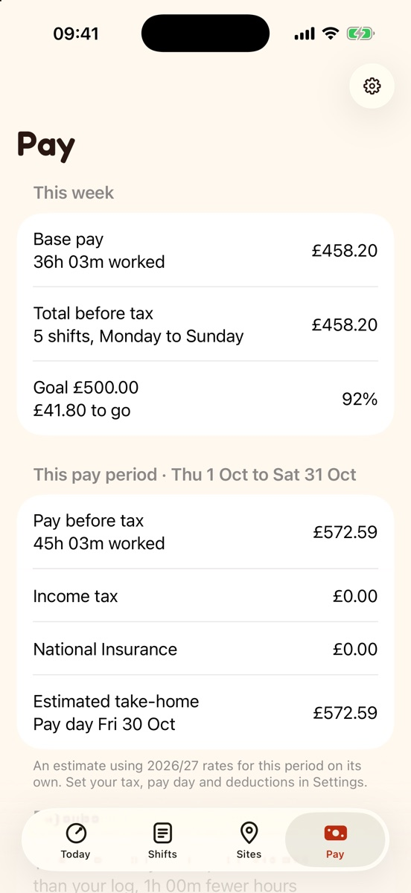
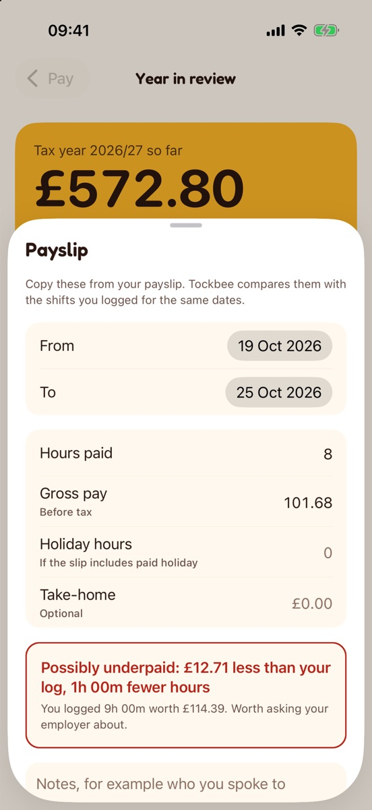

Pay
What your shifts should pay
Overtime, weekend and night rates and unpaid breaks, worked out minute by minute. Then an estimated take-home for your pay period.
Rates and rules, priced to the minute
- Rates and rulesOvertime, weekends, nights and unpaid breaks. Midnight, weekends and clock changes are exact.
- Estimated take-homeAfter PAYE (including Scottish rates), National Insurance, student loan and pension.
- Holiday accrualAt 12.07%, plus tips and business miles at HMRC rates.
- Universal Credit periodsIf your pay is assessed that way.
This week · Riverside Care Home
Estimated take-home after tax, National Insurance, student loan and pension is worked out for your pay period. Your payslip is the official figure.
Payslip check: possibly underpaid? You’ll know
Copy in what your payslip says. Tockbee compares it with the shifts you logged for the same dates and shows the difference. Calm facts, never alarms.


Everything Tockbee does
Made for UK hourly, shift and gig workers. Plain words: rota, payslip, take-home.
Clock
It knows when you’re at work
- Automatic clock-inBy location at a work site, or by joining your work Wi-Fi.
- Undo, every timeEach automatic clock-in sends a notification you can reverse.
- Live Activity and widgetsFor the Lock Screen, the Dynamic Island and the Home Screen.
- Rota remindersSo a shift never starts unrecorded.
Pay
What it should pay
- Rates and rulesOvertime, weekends, nights and unpaid breaks.
- Estimated take-homeAfter PAYE (including Scottish rates), National Insurance, student loan and pension.
- Holiday accrualAt 12.07%, plus tips and business miles at HMRC rates.
- Universal Credit periodsIf your pay is assessed that way.
Record
Your record, your call
- Payslip checkShows any hours or pay that went missing.
- Timesheet packA PDF with every shift, how it was recorded and a record check, with a letter template and Acas guidance.
- CSV exportFor spreadsheets.
- Face ID lockKeeps it private on a shared phone.
Questions about Tockbee
More answers on the support page, or write to hello@dotxline.com.
Do I need an account?
No. Open Tockbee and start. There is nothing to sign up for.
Why does Tockbee ask for location “Always”?
Only to notice when you arrive at or leave a work site you created, so it can clock you in and out. There is no continuous tracking and your location never leaves your phone. You can use work Wi-Fi or the Clock button instead.
Are the tax figures exact?
No. Take-home is an estimate after tax, National Insurance, student loan and pension. Your payslip is the official figure.